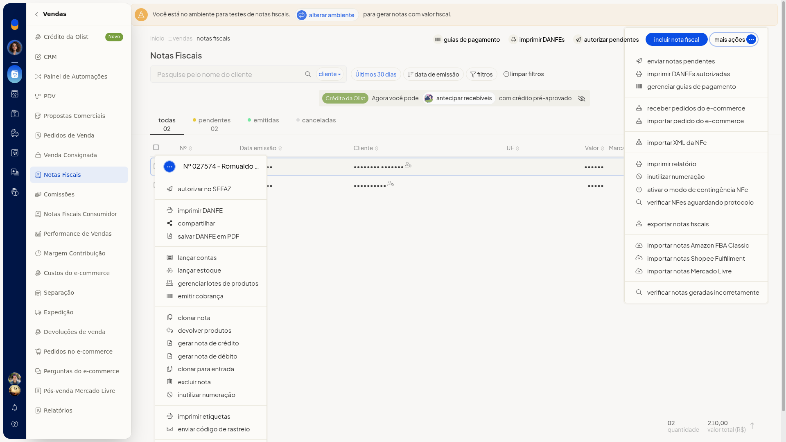
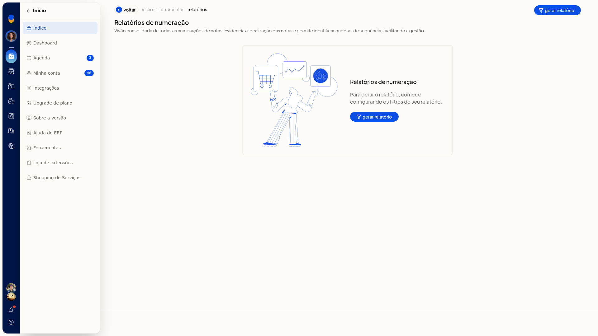
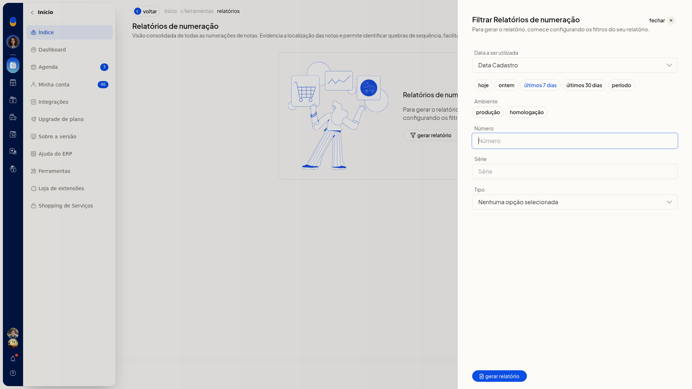
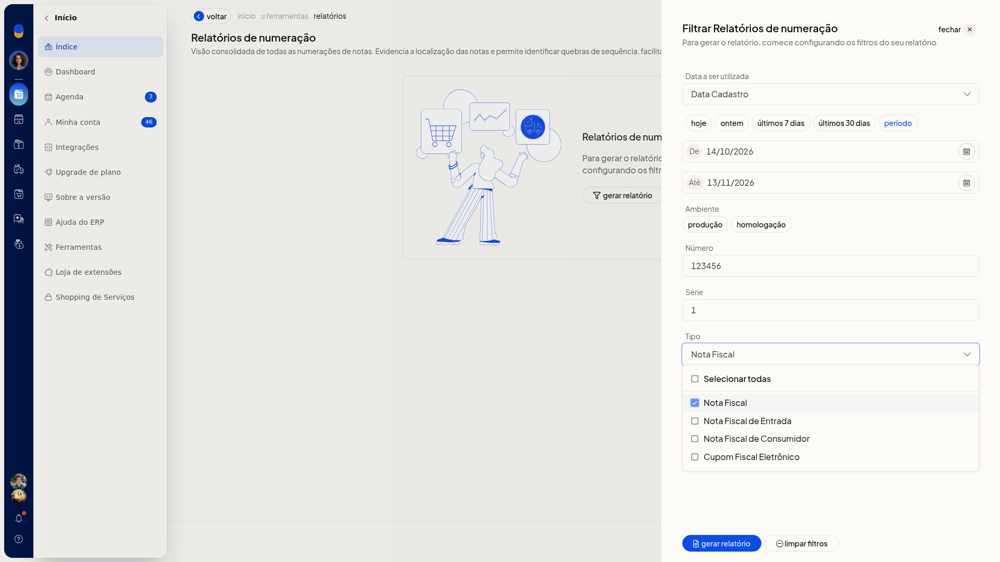

Lista de notas fiscais e relatório de numeração
Importante
- Se a tela de inutilização informar que o Tiny NFe não está em execução, o formulário para inutilizar número não fica disponível. O botão Relatório de numeração permanece nessa tela.
Instruções
Consultar a lista de notas fiscais
-
Acesse Vendas > Notas Fiscais.

-
Clique na aba Todas, Pendentes, Emitidas ou Canceladas para separar as notas pela situação.
-
Filtre pelo cliente e pela data de emissão. O período inclui Últimos 30 dias. Para voltar à lista sem filtro, clique em limpar filtros.
-
Na linha da nota, abra o menu de ações para escolher a operação daquela nota.

-
No topo da lista, use Imprimir DANFEs, Autorizar pendentes, Incluir nota fiscal ou Mais ações.
-
Abra Mais ações para ver as operações da lista: Enviar notas pendentes, Imprimir DANFEs autorizadas, gerenciar guias de pagamento, Receber/Importar pedido do e-commerce, Importar XML da NFe, Imprimir relatório, Inutilizar numeração, Ativar o modo de contingência NFe, Verificar NFes Aguardando protocolo, Exportar notas fiscais, Importar notas Amazon FBA Classic, Shopee Fulfillment, Mercado Livre e Verificar notas geradas incorretamente. Você localiza a nota e escolhe a operação na lista ou na linha.

Gerar o relatório de numeração
-
Acesse Vendas > Notas Fiscais.
-
Abra Mais ações e clique em Inutilizar numeração. A mesma opção também está no menu da linha, na nota pendente e na nota emitida.

-
Clique em Relatório de numeração. Se não houver registro, a tela mostra Nenhum registro encontrado.

-
Clique em gerar relatório. O filtro abre, ainda sem arquivo.

-
Escolha o critério de data (Data Cadastro ou Data Emissão), o período, o Ambiente, o Número, a Série e o Tipo. Nenhum desses campos é obrigatório. Em Ambiente, as opções são produção e homologação. Em Tipo, as opções são Selecionar todas, Nota Fiscal, Nota Fiscal de Entrada, Nota Fiscal de Consumidor e Cupom Fiscal Eletrônico. O filtro fica pronto para gerar o relatório.

Resultado
A lista fica em Vendas > Notas Fiscais, separada pelas abas Todas, Pendentes, Emitidas e Canceladas. O relatório de numeração abre o filtro com os critérios que você escolheu.
Informações adicionais
O menu da linha muda conforme a situação da nota
- Na nota pendente, o menu não traz Cancelar NFe, Carta de correção nem Download do XML da NFe.
- Na nota emitida, o menu traz Carta de correção e Cancelar NFe. Em Outras opções, aparece Download do XML da NFe.